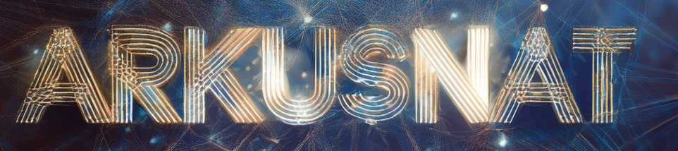

Stilistik & Zeichenmatrix
Der Versuch, das Werk im fiktionalen Kontext von F.G. Stier zu fassen. Jedes Kapitel repräsentiert einen eigenen Frequenzbereich des Archivs.

Wissenschaftlich-philosophische Analyse.
Literarische Dekonstruktion im Sci-Fi-Kontext.